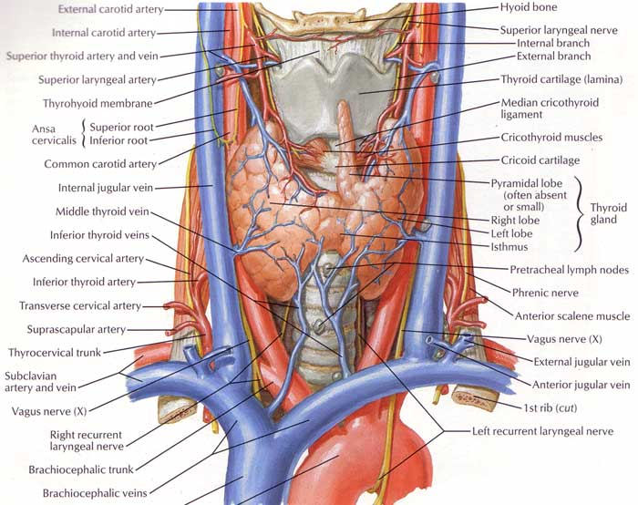
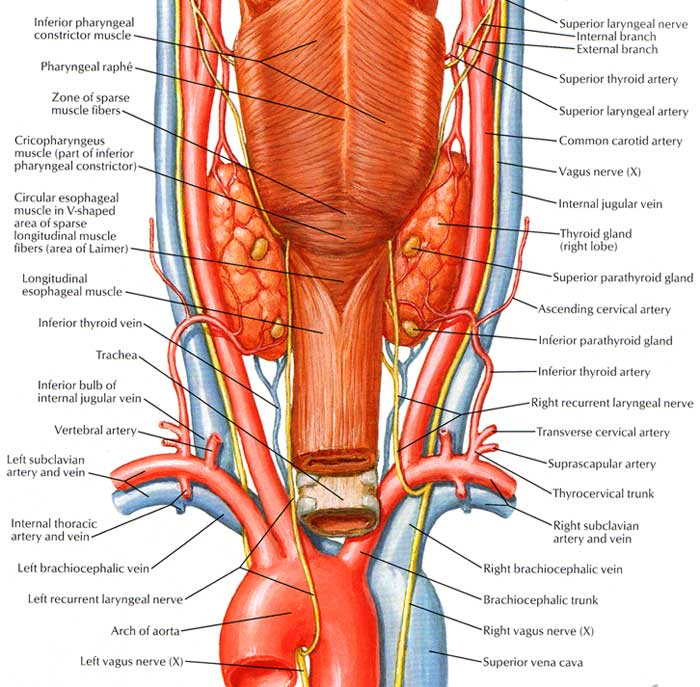
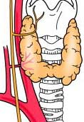
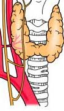
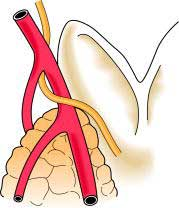
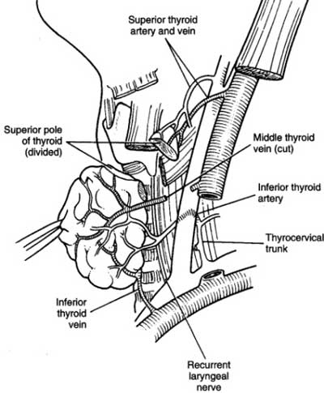

Thyroid
& Parathyroid Anatomy
Gland

Intro
Thyroid consists of symmetrical lobes connected by an isthmus
- isthmus lies in front to 2nd-4th tracheal rings.
- lobes lie on larynx and trachea, from oblique line of thyroid
cartilage to 6th tracheal ring.
- and deep to the strap muscles of the neck
Weighs about 25g.
Surrounded by its capsule and enveloped in pretracheal fascia.
- fascia can be separated easily from straps, true capsule cannot.
Suspensory Ligament of
Berry
Condensation of fascia and capsule, 'suspending' thyroid from
trachea at medial aspect of upper lobes.
Lobes
Pear shaped: narrow upper, broader lower.
Triangular x-section
- lateral surface under sternothyroid and sternohyoid.
- medial against lateral larynx and upper trachea, with lower
pharynx, upper oesophagus immediately behind.
- posterior surface overlaps medial carotid sheath; parathyroids
usually in contact with posterior surface and fascial sheath
Important relationships (routinely
identify):
Orient trachea in midline, pre-vertebral fascia and carotids
laterally.
1. middle thyroid vein
2. superior and inferior thyroid arteries
3. external branch of superior laryngeal nerve.
4. recurrent laryngeal nerve
5. at least 2 parathyroids.
RLNs
RLNs approach medial surface from below.
- ascend in (50%) or in front of, or laterally to, the
tracheoesophageal groove (consistently converge on groove closer to
larynx)
- lies in the groove near terminal branches of inferior thyroid
arteries.
- approaches in 'Simon's Triangle': inf thyroid a. superior, c.
carotid lateral, oesophagus medial.
- only occasionally runs more posterior to the groove along the
oesophagus.
Always has a very close relationship to the inferior thyroid artery
- may pass in front of or behind the artery or sometimes between its
branches.
--> capsular dissection allows the nerve to be encountered close
to the artery; divide only the terminal arterial branches.
- n. may divide before disappearing, us. above the inf thyroid
artery; anterio motor, posterior sensory with crossover.
May also be injured higher up behind the thyroid, where it may pass
close to (or through) fascia holding thyroid to trachea.
--> observe the course of the nerve once identified to avoid
injury
When the thyroid is forcefully retracted, the nerve tends to travel
at 45o to line of tracheo-oeophageal groove; can be mistaken for a
blood vessel.
L recurves around aortic arch, usually in groove along course
- usually runs posterior to inferior thyroid artery (sometimes
anterior)
- here adjacent to parathyroid on posterior aspect of gland.
R recurves around R subclavian at root of neck, usually runs <1cm
lateral to groove at lower border of thyroid;
- found in groove passing ant or post to inf thyroid artery (or
between its branches) at level of mid thyroid.
- each nerve is behind pretracheal fascia, runs lateral (usually) or
through (25%) or sometimes medial to Berry's Ligament.
They run behind cricothyroid joint under cover of inferior
constrictor; tethered here and stretch can damage.
- then divide into two: anterior (larger) motor to laryngeal
muscles; posterior is sensory only.

The aberrant non-recurrent right laryngeal nerve is a rare (0.5%)
surgical hazard.
- arises directly from vagus, courses medially into larynx.

- very rarely both recurrent and non-recurrent present, usually
joining beneath lower border thyroid

There can also be communicating branches between the sympathetic
chain and RLNs, with branches as large as the RLN in 2% of cases.
Motor function is abduction of cords from midline;
- hence if damaged, paralysis on side affected, medialisation of
cord.
- normal weakened voice if one damaged, as long as remaining cord
able to approximate and compensate; if it does not meet, severe
voice impairment and ineffective cough result.
- if bilaterally damaged, --> semi-adducted positions, with
voice loss
With time, cords tend to move towards midline; improving voice but
risking airway obstruction (needing intubation / tracheostomy).
Unilateral cord paralysis may occur in up to 1% of individuals
anyway; maybe wise to determine cord status prior to operating for
medicolegal reasons.
External Laryngeal Nerves
Come from superior laryngeal nerve
- this separates from vagus at skull, descends with internal
carotid.
- divides into internal / external at hyoid cornu (internal enters
thyrohyoid membrane, innervating larynx).
Smaller external passes along inferior constrictor.
- follows / runs close behind the superior thyroid artery, passing
medial to upper pole to enter cricothyroid within 1cm of superior
thyroid artery's entrace into the capsule.
- ligate artery close to sup. pole, particularly when it courses
around the artery or its branches

Damage leads to inability to tighten cord on side of nerve
--> severe loss in quality of voice and voice strength; unable to
make high pitched sounds or project voice.
Isthmus
Fixed to trachea by dense pretracheal fascia.
- hence gland moves with swallow.
Two superior thyroid arteries anastomose across it's upper margin.
Tributaries from thyroid veins emerge from lower border.
Pyramidal Lobe
Small portion projecting generally to left of midline.
Is caudal end of thyroglosal duct.
- may be attached to inferior hyoid by fibrous tissue.
- sometimes muscle (levator glandulae thyroidae) innervated by
external laryngeal nerves.
Accessory Thyroid glands
Not uncommon near hyoid, in tongue, superior mediastinum or anywhere
along path of descent.
Parathyroids
Weight 30 mg; 6x5x2 mm
~5% of people have three glands and 10% have extras.
Increasing fatty content with old age
Lie within the thyroid capsule, immediately outside it or completely
separate
Can be identified by tan colour, size, soft consistency and mobility
within their capsule.
- with minor trauma show plum-coloured haemorrhagic change; function
may be impaired for 6w
Superior (from 4th branchial arch) is posterior to the RLN on
posterolateral aspect of upper half of thyroid; often near Tubercle
of Zuckerkandl.
- is more constant than the lower gland.
- embryology shared with pharynx; so undescended gland may be in the
pharyngeal derivatives from angle of mandible / carotid bifurcation
to thyroid gland.
Inferior (from 3rd branchial arch) is anterior to the line of RLN,
on surface of inferior pole in or uncommonly in thyrothymic ligament
or thymus.
- embryology shared with thymus; more inconstant and can be
associated with thyroid, carotid sheath, thyrothymic ligament, and
thymus.
To find superior gland
1. Look behind thyroid capsule adjacent to terminal divisions of
recurrent laryngeal nerve where it goes behind the cricopharyngeus
2. If not there, next most likely is within subcapsular tissue of
posterior upper thyroid at level of cricoid cartilage
- I individually ligate the vessels of the superior pole, mobilize
upper pole completely including dividing ligament of Berry, and
inspect this region carefully
3. Harder to find if embedded in thyroid or undescended in higher
neck (e.g. in carotid space with vagus nerve, pharygeal wall or
parapharyngeal space)
To find inferior gland
More variable.
Look within the thyroid capsule on posterolateral surface of lower
pole, inferior to where thyroid artery and RLN meet.
If not there, a quarter may be within thyrothymic ligament tissue or
within the thymus gland.
- this area has an enveloping fascia with vessels draining into
neck; mobilize with gentle traction and scissors
Can also be found in carotid sheath
If extensive searching fails
Consider ipsilateral hemithyroidecotmy.
Blood
Rich blood supply from anastomoses between superior and inferior
thyroid arteries
- mainly from inferior thyroid artery
Division of four thyroid arteries fortunately does not devascularize
them.
Other surgical points to note about parathyroids
Need a bloodless field, meticulous care, gentle dissection and good
retraction.
Often noticeable by a slight wobble in its capsule and salmon pink
colour and have a well defined pedicle of vessels.
RLN is part of the operative field and should be defined in
parathyroidectomy.
In tertiary hyperP, us. only need to take 3; e.g. don't go opening
sternum looking for additional glands in first operation.
Minimally-invasive (MIP) is now standard
- 2-3cm with preoperative localization bynuclear scanning
- still requires solid anatomical understanding as mibi localization
is pretty vague (side and pole).
- e.g. an lower pole gland may actually be a descended upper pole
gland.
- on table USS performed to help place incision and determine
planes.
Blood

Sup thyroid artery
1st branch of anterior aspect of external carotid.
- gives SCM and superior laryngeal branches.
- descen s on inferior constrictor then pierces pretracheal fascia
to meet summit of upper pole.
- divides on the gland into anterior branch (goes to isthmus) and
posterior branch (down posterior lobe to anastomose with ascending
branch from inferior thyroid artery).
- ligate it close to the pole or at ant / post branches to avoid
ELN.
- the arery lies inferior and lateral to the ELN
Inferior thyroid artery
From thyrocervical trunk.
- arches up and medial behind carotid sheath, loops down to lower
pole.
Divides outside pretracheal fascia into branches that then pierce it
separately.
- gives smal branches to surrounding tissues befor terminal thyroid
supply.
- ligate the artery well lateral to gland to safeguard the nerve.
Thyroid ima
Enters lower isthmus in 3%
From brachiocephalic trunk, aortic arch, or R common carotid.
Veins
Venous plexus on gland surface.
Sup thyroid veins follows arteries.
- enter int jug or facial vein (~50/50).
Mid thyroid veins (present in ~50%) cross ant to CCA draining to
IJV.
Inf thyroid veins multiple, drain to left brachiocephalic, one may
enter R brachiocephalic.
Lymph
Channels occur immediately beneath capsule, communicate across
isthmus.
Drained in nearly every direction, mainly to deep cervical nodes
- metastatic spread may track to pretracheal nodes (above isthmus),
paratracheal nodes, tracheoesophageal groove nodes, mediastinal
nodes, jugular nodes and retropharyngeal and oesophageal nodes.
- laterally cervical nodes in the posterior triangle may be
involved.
- sub-maxillary triangle nodes may be involved.
- few drain directly into thoracic duct
From lower pole pass with inf thyroid artery to postero-inferior
group.
Nerve
Sympathetic from superior, middle and inferior cervical ganglia:
accompany thyroid arteries.
Structure
Made of follicles containing colloid, from follicular cells (single
layer around).
- unique: only gland to store secretion outside of cells.
<2% cells are C / parafollicular cells, secreting calcitonin.
Development
From caudal end of thyroglossal duct.
- initially midline diverticulum in floor of pharynx (at foramen
caecum).
- endodermal tissue, originally of primitive GI tract.
- thyroglossal duct resorbed at 6 weeks.
- descends behind hyoid (most duct cysts immediately beneath hyoid)
- distal end of duct becomes pyramidal lobe
There is no lateral migration of thyroid tissue
- the once-called 'lateral abberant thyroid tissue' is likely
metastatic deposit from well-differentiated thyroid carcinoma.
C-cells arise from 5th pharyngeal pouch, migrate from neural crest
to gland.
RLNs embryologically arises as per vagus from 4th pharyngeal arch,
hence decent with related arch vessels and recurrent course
Surgical Notes
If straps divided, do so at high
level to guard nerve supply.
- and prevent adherence to wound.
References
Last 10th
Sabiston 17th
Netter.